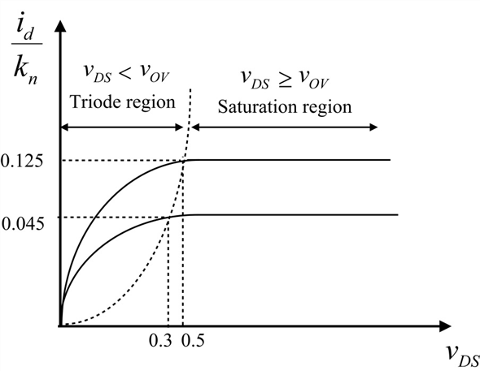
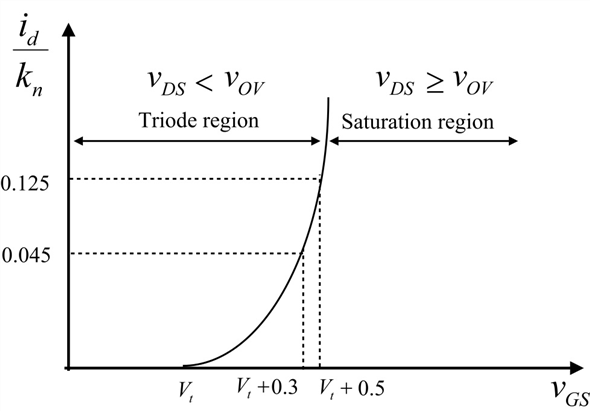
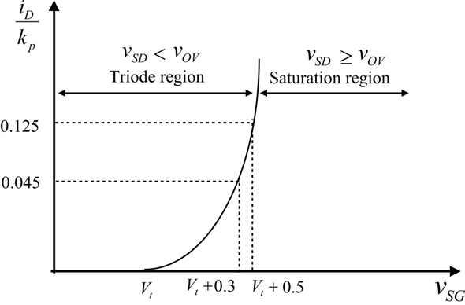

Consider the expression of drain current of MOSFET,  .
.
The expression for  is,
is,
Substitute for and for  in the expression for drain current.
in the expression for drain current.
Thus, the relation between  and
and is,
is,
Consider the expression of drain current of MOSFET, .
The expression for is,
Substitute for and for in the expression for drain current.
Thus, the relation between and is,
Substitute 0.5 V for  .
.
Table 1 shows the value of the parameter  for different values of
for different values of  , at
, at  equal to 0.5 V.
equal to 0.5 V.
Table 1
| | 0 | 0.1 | 0.2 | 0.3 | 0.4 | 0.5 |
| | 0 | 0.05 | 0.1 | 0.15 | 0.2 | 0.25 |
The equation of  for is,
for is,
Table 2 shows the value of the parameter  for different values of
for different values of  , at
, at  equal to 0.3 V.
equal to 0.3 V.
Table 2
|
| 0 | 0.1 | 0.2 | 0.3 |
| | 0 | 0.03 | 0.06 | 0.09 |
For the NMOS transistor enters into saturation region. Thus, the value of  becomes independent of
becomes independent of  .
.
Determine the value of  at .
at .

Thus, the value of  at is,
at is,
Thus, use all the obtained values to plot  versus
versus  for different values of .
for different values of .

Observe from the plot that versus  resembles the plot of characteristics.
resembles the plot of characteristics.
Since, the region of operation of a device is independent of  , thus, it is independent of both technology and device.
, thus, it is independent of both technology and device.
Thus, plot of  versus results in unique representation of characteristics of NMOS transistor which is independent of both technology and device.
versus results in unique representation of characteristics of NMOS transistor which is independent of both technology and device.
Consider the expression for  .
.
For , the ratio is,
For , the ratio is,
For , the ratio is,
Observe from the obtained values that , characteristics plot can be obtained from the by plotting the saturated values at different values of  and shifting the origin of the plot to .
and shifting the origin of the plot to .
Sketch  versus characteristics.
versus characteristics.

Figure 2
Observe from the figure that the drain current value is zero till and from , the graph represents a parabola.
The plot of  versus resembles the plot of characteristics.
versus resembles the plot of characteristics.
Since, the region of operation of a device is independent of , thus, it is independent of both technology and device.
Thus, plot of versus  results in unique representation of
results in unique representation of  characteristics of NMOS transistor which is independent of both technology and device.
characteristics of NMOS transistor which is independent of both technology and device.
PMOS transistor enters into saturation when .
The equation of drain current of the PMOS transistor in saturation region is,
Thus, the expression for is,
Thus,  versus plot of PMOS transistor which resembles characteristic plot is obtained by relabeling the variables.
versus plot of PMOS transistor which resembles characteristic plot is obtained by relabeling the variables.

Figure 3
Thus, versus plot of PMOS transistor which resembles characteristic plot is obtained by relabeling the variables as shown in Figure 4.

Figure 4
Observe from Figure 3 and Figure 4 that the region of operation of the device is independent of  , thus, it is independent of both technology and device.
, thus, it is independent of both technology and device.
Observe from Figure 1 that, for , the drain current .
Therefore, the slope of  curve is,
curve is,
Thus, the slope of the graph  versus
versus  is zero.
is zero.
 represents the overdrive voltage and at this value of , the device saturates. So, the ratio,
represents the overdrive voltage and at this value of , the device saturates. So, the ratio,  remains constant and for a constant value, the slope is zero.
remains constant and for a constant value, the slope is zero.
Thus, the slope at is zero.